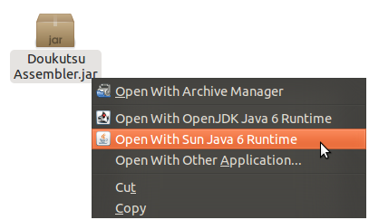
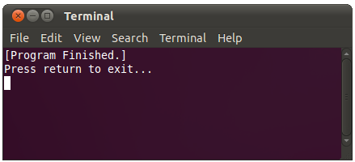
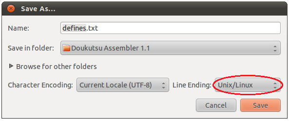

|
Opening the Doukutsu Assembler Using Right-Click (Not recommended) Opening the Assembler in Ubuntu is possible through the right-click menu. Right click on it and select "Open With OpenJDK Java 6 Runtime" or "Open With Sun Java 6 Runtime". Do not use the archive manager.  Warning: It is suggested that, in Linux, you do not use the right click menu to run the Assembler. Instead, use the below method (bash file method) to open the Assembler. Otherwise, the program has trouble finding defines.txt and dumps the error.log file into your /home/username folder. Not good. Running the Assembler from a Bash Script (Recommended) If you downloaded the special Linux version of the Doukutsu Assembler, you should already have this bash file inside your extracted folder. You don't need to recreate it. Running the Assembler from a bash script has some serious benefits. We are now going to create a bash file (which is one type of Linux shell script). This should be a lot easier than using the Terminal to navigate and find the Assembler. Paste the following code into a text editor and save it as Run Assembler. #!/bin/bash java -jar 'Doukutsu Assembler.jar' echo "[Program Finished.]" echo "Press return to exit..." read nothingNow use chmod +x 'Run Assembler' in Terminal to force it to become an executable script. Instead of chmod, you can also right-click the file, go to Properties > Permissions, and check the Allow Executing File As Program checkbox. Put the Run Assembler file in the same folder as the Doukutsu Assembler. Double-click on the script (make sure you select Run in Terminal when it prompts you) and it'll run the Assembler. When you close the Assembler but not the Terminal window, you should see [Program Finished.].  There are many advantages to running from a bash file. If the program unexpectedly crashes without displaying a proper error box, you can see what went wrong inside the Terminal window. Also, if the program gets stuck in an infinite loop (which should hopefully never happen), you can close the Terminal window and it will shut down the Assembler immediately. Preparing defines.txt, settings.ini, and asm.txt If you downloaded the special Linux version of the Doukutsu Assembler, please IGNORE this section entirely. You shouldn't need to resave defines.txt or any other text file that came with the Assembler. Before you start using the Assembler, it is very important to change defines.txt and any similar text files so that they have Linux-style end of line characters instead of Windows-style end of line characters. Open defines.txt in a text editor (not the Assembler itself!) and resave the file with the Linux/Unix line ending style. I highly recommend the text editor gedit because it clearly has this feature:  Do the exact same thing for settings.ini and asm.txt. Font Problems The Linux version of the Doukutsu Assembler uses Liberation Mono as its font. The Windows version uses Lucida Console. Lucida Console is Microsoft proprietary, but Liberation Mono is free. You should be able to get a copy of the Liberation Mono font simply by searching online. Most Linux machines already have this font pre-installed, so don't worry about it unless you're clearly running into font problems. Back to the Table of Contents |